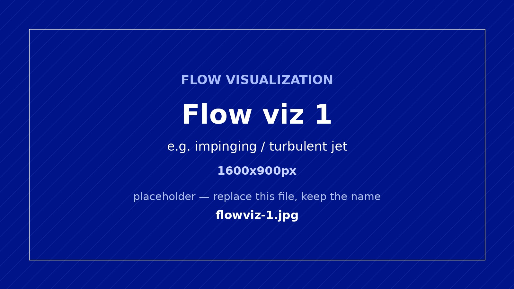
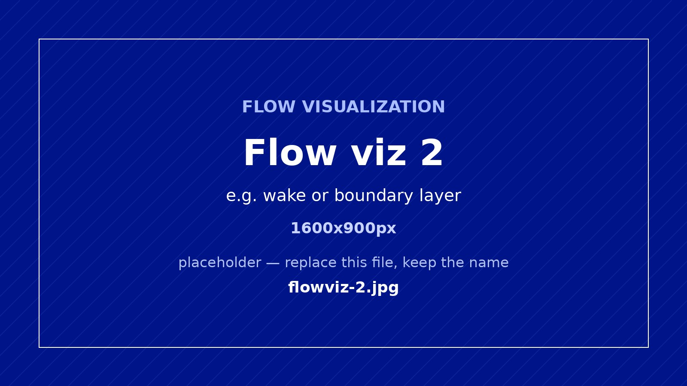
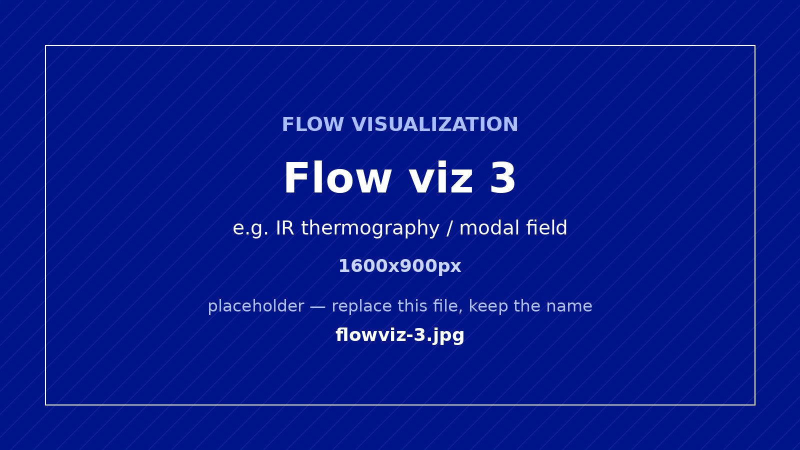
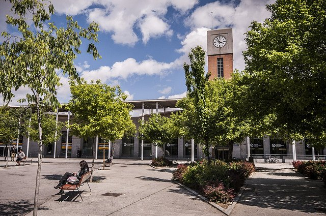

Madrid · Spain · 11–15 July 2027
22nd International Symposium on Flow Visualization
ISFV22 will bring the international flow visualization community to Madrid for scientific exchange on experimental, optical, image-based, computational and data-driven methods for understanding fluid-flow phenomena.
Welcome
Welcome to ISFV22 Madrid
ISFV22 will convene the international flow visualization community in Madrid for five days of scientific exchange, including keynote lectures, technical sessions, poster sessions, the Masters of Flow Visualization event, networking activities and short courses.
The symposium will be hosted by Universidad Carlos III de Madrid at the Puerta de Toledo Campus, a central and well-connected venue located close to major cultural sites, museums, parks and transport connections.
Flow visualization
Science in motion
A glimpse of flow visualization research from the host group at Universidad Carlos III de Madrid.



At a glance
Important dates
Scope and topics
Applications, experimental methods, optical diagnostics, multidimensional measurements, data analysis and advanced visualization.
Read the scientific scopeProgramme
The first day will include the Masters of Flow Visualization event and the welcome reception. The final day will be dedicated to short courses.
View provisional programme
Venue
UC3M Puerta de Toledo Campus is located in central Madrid, with easy access from Madrid-Barajas Airport, metro, buses and rail connections.
Discover Madrid and the venue